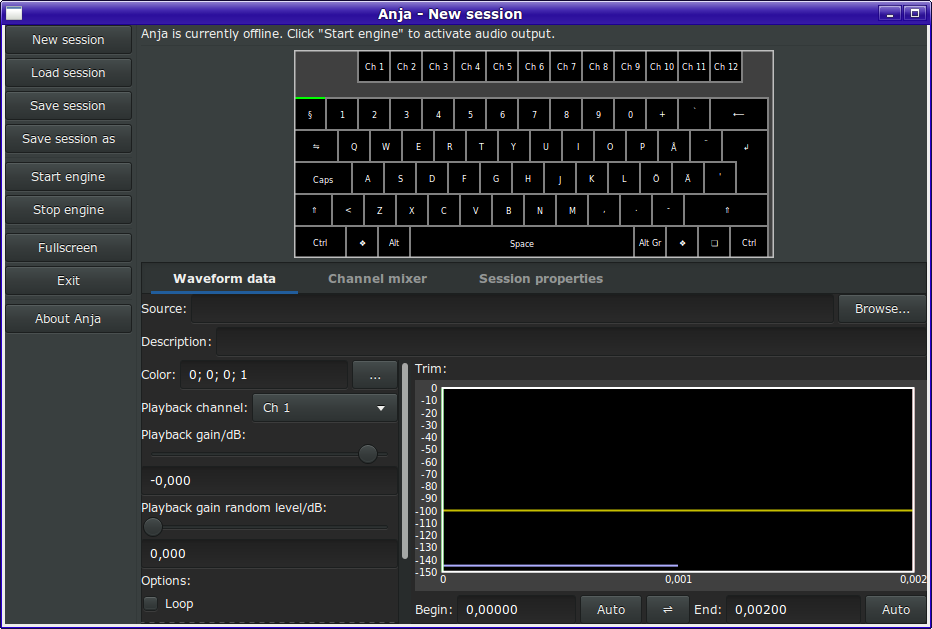
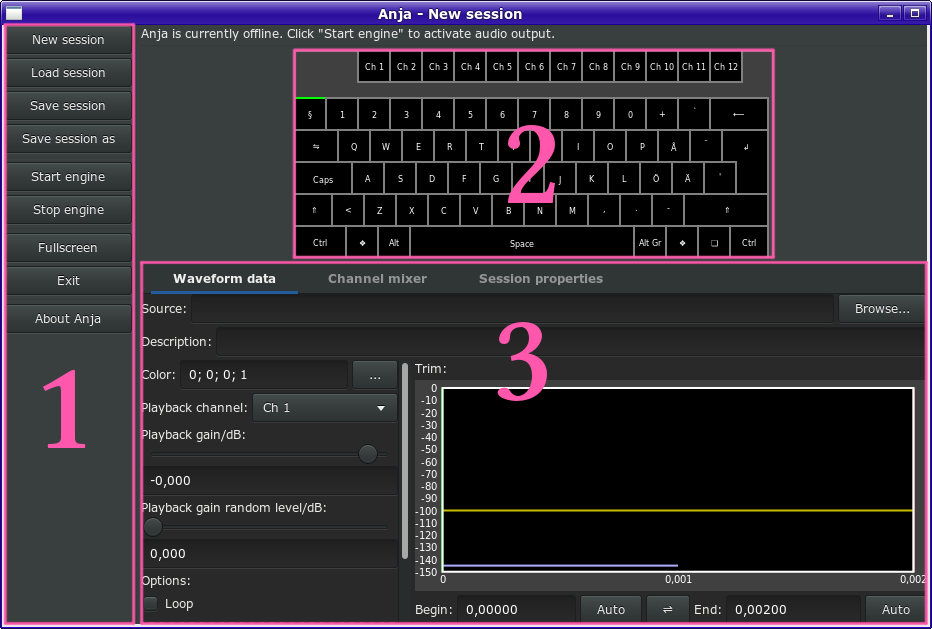

Anja is a sample player designed for live sound effect playback. Anja makes it possible to assign sound effects to the keys of the computer keyboard. Anja also featues a channel mixer with 16 channels, making it possible to fade a group of sound effects together. The backend of Anja is JACK, the low-latency audio server. The session file format of Anja is in a formalized text format, optimized for human readability.
1 Introduction
Anja is a sample player designed for live sound effect playback. Anja makes it possible to assign sound effects to the keys typing keys of the computer keyboard. To make it easier to find sound effects, each sound effect can have a description and a color, that shows up on Anja's virtual computer keyboard.
Anja also featues a channel mixer with 16 channels. All sound effects are routed through one of these channels. The channel mixer makes it possible to fade a group of sound effects together. As with sound effects, each channel has a color and a description. In addition to color, description and channel gain, each channel also has an adjustable fade time, that is used to automatically fade the channel.
The backend of Anja is JACK, the low-latency audio server [1]. This makes it possible to connect Anja to other JACK clients enabling the creation of more complex signal flows.
The session file format of Anja is in a formalized text format, optimized for human readability. The syntax of the session files has taken inspiration from formats such as Markdown [2] and is very similar to the syntax used in the "Doom template file" [3]. Therefore, session files can be easiliy edited by hand in a text editor, to the price of somewhat larger session files.
1.1System requirements
To run Anja, a working installation of JACK [1] is required. Moreover, Anja requires libsndfile and GTK+ version 3. Anja runs smoothly on an Intel® Pentium® M, and thus, it is only moderately CPU demanding. However, since Anja completely loads all sound files referenced from a session file, it may consume some RAM. At 48 kHz , the RAM usage is 11 MiB/min of sound. The minimum screen resolution for running Anja in fullscreen mode is 923 px × 599 px . In windowed mode, the required screen resolution depends on the windowing system, but it is approximately 930 px × 630 px .
1.2Anja compared to other software
There are other sample players that also may be used with JACK. One such program is Hydrogen [4]. Compared to Hydrogen, Anja lacks a sequencer. However, in Hydrogen, waveforms need to be assigned in a particular order, and Hydrogen does not feature an on-screen keyboard. Other features in Anja is event-triggerd auto-fade, and also a kill-all-softly feature.
2 Installing Anja
Before Anja can be used, the program needs to be installed. This chapter goes through the installation procedure.
2.1Installing on a GNU/Linux system
On GNU/Linux, the recommended way of installing Anja is to install it from the software repository. If there is no package available, download the source package [5], and compile it as according to the instructions in Section 2.2.
2.2Compiling Anja
Before Anja can be compiled, certain programs, and development packages are needed. These are listed in Table 2.1, together with their purpose. Obeserve that some of the packages may need a corresponding development package. On Ubuntu, these packages usually haave the suffix dev. Anja has been written using the wand build tool. Therefore, this program has to be available when Anja is compiled. The makefile distributed with Anja, tries to detect wand before the compilation starts. If the makefile fails to detect wand, a package containing wand is downloaded from the author's GitHub repository by using wget.
Table 2.1: Programs and packages needed to compile Anja. Packages marked with a ✻ symbol are libraries that may need a corresponding development package.
Name
Purpose
bash
Command line interpreter used to interpret commands given by make
Blender
Used to render Anja's logo.
g++
The GNU C++ compiler
git
Used to retrieve version info
head
Used to extract information about the compiler
jackd
Audio backend server
✻
libgtk-3
GUI backend on GNU/Linux
✻
libjack
Audio backend server, client library
✻
libsndfile
Library used to load sound files
make
Build script interpreter
mv
Used to rename Blender output files
ImageMagick
Used to generate an RGBA dump from a PNG file
tr
Used to extract information about the compiler. Also used to replace newlines with null terminator in compilation information strings.
touch
Used to force recompilation of the program information module
wand (from Gabi)
Used as compiler frontend
wget
In abscence of wand, wget is used to download wand version 5.77 from the author's GitHub repository.
xxd
Used to generate an RGBA dump from the PNG file produced by Blender
As mentioned above, the Anja source package can be obtained from [5]. Following this link gives the choice of downloading a gzipped tarball, or a zip archive. For the purpose of this tutorial, it is assumed that the tarball is downloaded. In order to extract that tarball, which is assumed to be called filename, issue the command
tar -xf filename
This will create a directory with a name derived from the name of the downloaded file, in the current working directory. If filename is anja-release-2-2.tar.gz, it will be called anja-release-2-2. Now cd into that directory and run make:
cd anja-release-2-2
make
When running make, files are written to __wand_targets_rel. After the compilation has completed, Anja can be launched directly by running the command
__wand_targets_rel/anja
Normally, Anja is distributed with pre-rendered logo images. It may happen that the corresponding Blender file has been updated and not the logo images. In this case, it will take a much longer time than normal, to compile Anja, since the makefile will need to rerender the logo.
To make it easier to launch Anja, you can move it to a place mentioned in the PATH variable. For example, if you have sudo permissions, you can do
sudo mv __wand_targets_rel/anja /usr/local/bin
If you do not have sudo permissions, you can move it to ~/bin instead:
mv __wand_targets_rel/anja ~/bin
3 Using Anja
Starting Anja without any command line arguments brings up a window that looks like the one presented in Figure 3.1. The workspace consits of three main parts annotated in Figure 3.2. To the left, there the Action panel a panel with different buttons that affect Anja's current state. To the right of that, the Keyboard view is located, and below that, there is a Settings panel, controling which waveforms are loaded as well as the playback of loaded waveforms. Above the Keyboard view, there is an area for text messages indicating the state of the audio engine.

Figure 3.1: The Anja window, as shown after launching Anja without any command line arguments

Figure 3.2: The different parts of the Anja workspace. (1) is the Action panel, used to control Anja's state, (2) is the Keyboard view, which selects waveform slots and channels, and (3) is the Settings panel, which controls which loads waveforms and controls the playback of loaded waveforms.
3.1Loading a waveform
To load a waveform, choose a slot by clicking on the corresponding key in the Keyboard view. It is possible to choose any key except one of the function keys, but it is recommended to avoid the keys Alt and ❖. After choosing a slot click Browse... to the right of Source field now visible in th Settings panel. This brings up a file selection dialog. It is also possible to type a filename directly in the text input field to the left of Browse....
In case a multi-channel audio file is loaded, only the data for the first (usually the "left" channel) will be loaded. This is because Anja uses mono waveforms. For information about playing multi-channel audio, see ??.
3.2Playing waveforms
Before any sound can be heard from Anja, the audio engine has to be running. The audio engine is started by clicking the button Start engine in the Action panel. Now, when the engine is running, there should be a new JACK client with a name that derived from the name of the current Anja session. For example, after starting the engine on the default session, there should be a JACK client called New session.anja. To list all JACK clients and ports open a teminal and type
jack_lsp
If you did not load any old session, or have not modified the default session, you will see something like
system:capture_1
system:capture_2
system:playback_1
system:playback_2
New session.anja:Master out
New session.anja:Audio capture
New session.anja:MIDI in
New session.anja:MIDI out
The interesting port in this case is New session.anja:Master out. Connecting this port to system:playback_1 and system:playback_2 will enable sound output from Anja to the left and right speaker (or what ever is connected to the corresponding audio output ports of the computer). JACK ports can be connected by using the command jack_connect[6]. The command to connect these ports would be
The status message shown when the audio engine is running suggests using a JACK patchbay tool such as Catia[7] shown in Figure 3.3. In Catia ports can be connected using "Drag and drop".
When the audio engine is started, and the output port is connected, a loaded waveform can be played by hitting the corresponding key on the computer keyboard.
Trigging playback through the computer keyboard is only possible when the Keyboard view has keyboard focus. This is indicated by a green rectangle.